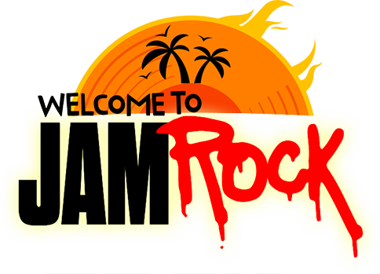

WELCOME TO JAMROCK

Jamrock
January 25, 2024
This place was such a great random find thanks to a friend of mine who is actually Jamaican.
Jamrock is a literal hole in the wall type restaurant located at GW Brook Business Park. You can spot it immediately you enter because who’s gonna miss the international reggae colours of red, green and yellow?😊
They have quite limited seating both on the inside and the outside but you can sit in the main area of the courtyard and your order will still be brought to you there.
They have a little cocktail bar on the side of the restaurant and the whole place just feels casual and chill.
I love the vibrant murals painted on their walls, showcasing little aspects of Jamaica here and there.
That fish was amazing, period. For drinks I’d recommend the Jamrock special (KSH400, non-alcoholic), it’s a very refreshing mocktail.
They have an array of cocktails as well and you know Jamaicans love their rum so if you get to try any of them - come back and tell us about it.
Normally I wouldn’t think to have dessert here because it doesn’t feel like a place that would have much to offer there but our waitress insisted we try their mango cheesecake (KSH700) and I’m so glad I did. That cheesecake was so fresh and so tasty! I would never voluntarily choose a mango cheesecake when it comes to cheesecake flavours, I’m more of a berries babe but this one was so well done that I may add it to my roster of flavours now😅 I expected it to taste frozen and lacklustre but we were told it was made fresh that day and it tasted exactly that - FRESH AF. The mango flavour wasn’t too sweet, just sweet enough to balance out the tartness of the cheese, highly recommend it!
Now back to the ambience I was referring to at the start… this place has much better vibes at night, especially on a Friday night.
It feels like an outdoor chill bar, where you can drink and hangout but also dance with your people if you want because the music is played at a nice volume and it’s all reggae and dancehall jams💃🏽
They have happy hour from 5 - 7pm on Fridays and Saturdays😌 I enjoyed Jamrock a lot, enough to keep going back - great food, great prices, great vibes all round🇯🇲
Ratings
Food: ⭐️⭐️⭐️⭐️